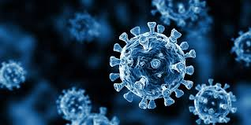
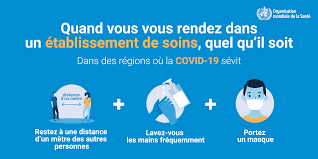
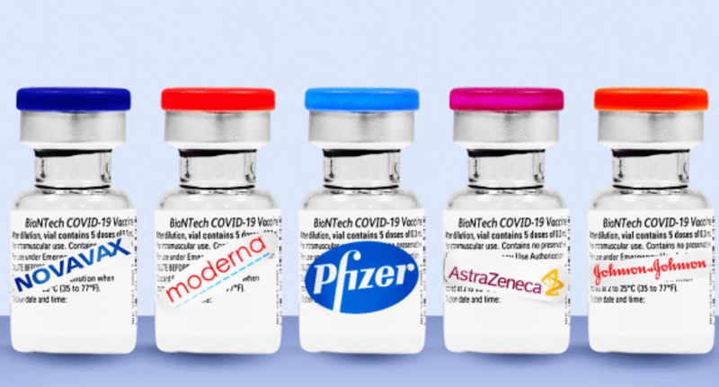

Covid-19 fait référence à « Coronavirus Disease 2019 », la maladie provoquée par un virus de la famille des Coronaviridae, le SARS-CoV-2. Cette maladie infectieuse est une zoonose, dont l'origine est encore débattue, qui a émergé en décembre 2019 dans la ville de Wuhan, dans la province du Hubei en Chine. Elle s'est rapidement propagée, d'abord dans toute la Chine, puis à l'étranger provoquant une épidémie mondiale. Le Covid-19 est une maladie respiratoire pouvant être mortelle chez les patients fragilisés par l'âge ou une autre maladie chronique. Elle se transmet par contact rapproché avec des personnes infectées. La maladie pourrait aussi être transmise par des patients asymptomatiques mais les données scientifiques manquent pour en attester avec certitude.

Depuis le 1er février 2023, l’isolement systématique pour les personnes testées positives au Covid-19 et la réalisation d’un test de dépistage au deuxième jour de la notification du statut de contact pou r les personnes contact asymptomatiques ne seront plus requis En revanche, comme pour toute maladie à infection respiratoire aiguë, il reste fortement recommandé aux personnes testées positives au Covid-19, ainsi qu’aux personnes ayant été exposées à une personne contagieuse et susceptibles de développer la maladie, de respecter les gestes barrières, de se faire tester et d’éviter le contact avec les personnes fragiles.

Les « vaccins à virus inactivé », les plus couramment utilisés, reposent sur une injection du virus entier ou d'une partie de virus préalablement rendu inoffensif afin de déclencher une réponse immunitaire en cas d'infection : il contient des nanoparticules de glycoprotéines Spike
Le vaccin Comirnaty de Pfizer utilisé est moins dosé en ARN que celui de Moderna : il contient 30 microgrammes d'ARN en primo-vaccination et en rappel contre 100 microgrammes d'ARN pour le Spikevax de Moderna en primo-vaccination et 50